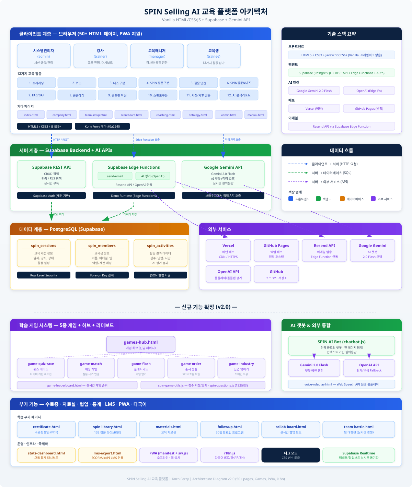

| 등 록 구 분 | 한국저작권위원회 프로그램저작물 등록용 |
| 프로그램명 | SPIN Selling AI 교육 플랫폼 |
| 분 류 | 컴퓨터프로그램저작물 (웹 기반 교육 플랫폼) |
| 버 전 | v2.0 |
| 저 작 자 | 심재우 (SB Consulting) |
| 창 작 일 | 2026년 4월 |
| 개발 언어 | HTML5, CSS3, JavaScript ES6+ |
본 프로그램은 Korn Ferry의 SPIN Selling 방법론을 디지털 학습 환경에서 효과적으로 전달하기 위해 개발된 웹 기반 교육 플랫폼이다. 오프라인 강의실 교육과 교육생의 개별 디바이스를 연결하여 실시간 참여와 AI 기반 개인화 학습을 동시에 실현하는 것이 본 프로그램의 핵심 가치이다.
| 항목 | 내용 |
|---|---|
| 프로그램명 (국문) | SPIN Selling AI 교육 플랫폼 |
| 프로그램명 (영문) | SPIN Selling AI Training Platform |
| 버전 | v2.0 |
| 저작자 | 심재우 (SB Consulting 대표, Korn Ferry 공인 마스터 트레이너) |
| 저작권 분류 | 컴퓨터프로그램저작물 (웹 기반 교육 플랫폼 및 LMS) |
| 창작 완성 일자 | 2026년 4월 |
| 개발 언어 | HTML5, CSS3, JavaScript (ES6+), TypeScript (Edge Function) |
| 실행 플랫폼 | 웹 브라우저 (Chrome, Edge, Safari, Firefox), PWA 설치형 앱 |
| 프레임워크 | Vanilla JavaScript (프레임워크 비종속) |
| 배포 환경 | Vercel (프로덕션), GitHub Pages (백업) |
| 백엔드 | Supabase (PostgreSQL 14, REST API, Edge Functions, Storage) |
| AI 엔진 | Google Gemini 2.0 Flash + gemini-embedding-001 |
전통적인 B2B 영업 교육은 강사 일방향 강의로 진행되는 경우가 많아 교육생의 적극적 참여를 이끌어내기 어렵고, 교육 후 실무 적용률이 낮다는 구조적 한계를 가지고 있다. 특히 Korn Ferry SPIN Selling과 같이 실습과 내재화가 중요한 방법론은 일회성 강의만으로는 충분한 학습 효과를 거두기 힘들다.
본 프로그램은 이러한 문제를 해결하기 위해 강사의 오프라인 교육과 교육생 개별 디바이스를 활용한 디지털 참여를 결합한 새로운 하이브리드 학습 모델을 구현한다. 교육생은 자신의 스마트폰, 태블릿, 노트북을 통해 실시간으로 퀴즈, 게임, 롤플레이, 분석 리포트 등 다양한 활동에 참여 하며, 강사는 대형 스크린을 통해 전체 참여 현황과 리더보드를 실시간으로 공유한다.
본 프로그램은 4가지 역할(Role)에 따라 접근 권한과 사용 화면이 분기되는 멀티 테넌트 구조로 설계되었다.
| 역할 | 접근 대상 | 주요 기능 |
|---|---|---|
| 시스템 관리자 (admin) |
SB Consulting 본사 담당자 | 전체 회사 관리, 라이선스 발급, 통계 대시보드, 사용자 역할 부여, 콘텐츠 관리 |
| 강사 (trainer) |
Korn Ferry 공인 마스터 트레이너, 퍼실리테이터 | 교육 세션 생성, 실시간 진행 관리, 팀 대항전 운영, 리더보드 공유, AI 리포트 확인 |
| 교육 매니저 (manager) |
고객사 HRD 담당자 | 자사 교육생 등록, 진행률 조회, 수료증 발급, 통계 리포트 다운로드, 팔로업 설정 |
| 교육생 (trainee) |
B2B 영업 담당자, 세일즈 리더 | 학습 활동 참여, 게임, 퀴즈, AI 롤플레이, 개인 리포트 조회, 수료증 발급 |
| 항목 | 기존 오프라인 교육 | 본 플랫폼 적용 |
|---|---|---|
| 교육생 참여도 | 수동적 수강 (약 30%) | 능동적 참여 (80% 이상 목표) |
| 진행 상황 추적 | 강사 주관적 판단 | 실시간 점수 및 활동 로그 |
| 개인화 피드백 | 강의 후 1:1 한정 | AI 리포트 자동 생성 |
| 학습 지속성 | 교육 종료 시 중단 | 30일 팔로업 자동화 |
| 수료 증빙 | 수기 발급 | 자동 발급 + A4 인쇄 |
본 프로그램은 「저작권법」 제4조 제1항 제9호 및 「컴퓨터프로그램보호법」의 보호 대상인 컴퓨터프로그램저작물에 해당한다. 저작자 심재우는 본 프로그램의 모든 소스코드, UI/UX 디자인, 알고리즘, 자체 개발 콘텐츠(질문 데이터베이스, 게임 메커닉, 시나리오 등)에 대해 독점적 저작권을 보유한다.
본 플랫폼은 총 60개 이상의 HTML 페이지, 35개의 핵심 기능, 5종의 학습 게임, 38개 RAG 지식 청크, 132개 SPIN 질문 데이터베이스로 구성되어 있다.
| 구성 요소 | 수량/규모 | 비고 |
|---|---|---|
| HTML 페이지 | 60+ 개 | 학습 활동, 게임, 관리, 부가 기능 |
| 핵심 기능 모듈 | 35 개 | 학습 12 + 운영 6 + 게임 9 + AI 4 + 배포 4 |
| JavaScript 모듈 | 약 20 개 | common.js, chatbot.js, spin-knowledge-base.js 등 |
| 총 소스코드 라인 | 약 30,000+ 줄 | HTML/CSS/JS 합산 추정 |
| SPIN 질문 DB | 132 개 | 11개 산업 × 12개 질문 (자체 개발) |
| RAG 지식 청크 | 38 개 | SPIN 이론, 사례, 팁 (자체 구축) |
| 학습 게임 | 5 종 | 퀴즈 레이스, 매칭, 플래시카드, 순서 정렬, 질문 선택 |
| Supabase 테이블 | 3 개 (주요) | spin_sessions, spin_members, spin_activities |
| 지원 역할 (Role) | 4 종 | admin / trainer / manager / trainee |
| 지원 산업 (롤플레이) | 10 개 | IT, 제조, 금융, 의료, 교육, 리테일 등 |
| 시기 | 주요 개발 내용 |
|---|---|
| 2025 Q4 | 프로젝트 기획, 요구사항 정의, Korn Ferry 방법론 분석 |
| 2026.01 | 기본 UI/UX 설계, 디자인 시스템(common.css) 구축 |
| 2026.02 | 학습 활동 12종 구현, Supabase 연동, 점수 시스템 개발 |
| 2026.03 | 5종 게임 메커닉 개발, AI 챗봇(하이브리드 RAG) 통합 |
| 2026.04 | v2.0 릴리즈, AI 평가 고도화, 저작권 등록 준비 |
본 플랫폼은 표준적인 3계층 아키텍처(3-tier architecture)를 기반으로, 클라이언트, 서버, 데이터 계층을 명확히 분리하여 확장성과 유지보수성을 확보하였다. 프레임워크에 종속되지 않는 Vanilla JavaScript 기반으로 구현하여 번들 사이즈를 최소화하고, 브라우저 호환성과 로딩 속도를 극대화하였다.

사용자가 직접 상호작용하는 프레젠테이션 계층으로, 모든 UI와 사용자 인터랙션을 담당한다. 웹 브라우저를 통해 접근하며, PWA(Progressive Web App) 기술을 적용하여 모바일 디바이스에서도 설치형 앱처럼 사용 가능하다.
| 구성 요소 | 기술 | 설명 |
|---|---|---|
| HTML 페이지 | HTML5 | 60+ 개의 정적 페이지, Semantic HTML 준수 |
| 스타일 | CSS3 (common.css) | 디자인 시스템 약 1,500줄, CSS Variables, Grid/Flexbox |
| 스크립트 | Vanilla JS (ES6+) | 프레임워크 미사용, 모듈 패턴 |
| PWA | Service Worker + Manifest | 오프라인 캐시, 홈 화면 추가, 푸시 지원 |
| 국제화 | i18n.js | 한국어/영어 전환 기반 구조 |
| 다크 모드 | CSS Variables | 토글 시 즉시 전환, 로컬스토리지 저장 |
본 플랫폼의 백엔드는 Supabase BaaS(Backend as a Service)를 활용하여 REST API, 인증, Edge Functions를 제공한다. 별도의 서버 인프라를 운영하지 않고 서버리스 구조로 구축되어, 확장성과 비용 효율성을 동시에 달성하였다.
| 서비스 | 역할 | 주요 기능 |
|---|---|---|
| Supabase REST API | 데이터 CRUD | PostgreSQL 자동 생성 API, Row Level Security |
| Supabase Auth | 사용자 인증 | 이메일/비밀번호, 소셜 로그인, JWT 토큰 관리 |
| Edge Function (send-report) |
이메일 발송 | Resend API 연동, AI 리포트 HTML 생성 후 발송 |
| Edge Function (ai-evaluate) |
AI 평가 | Gemini API 호출, 롤플레이/콜플랜 자동 채점 |
| Google Gemini API | AI 생성 | 챗봇 응답, 임베딩 생성, 롤플레이 대화 |
| Supabase Storage | 파일 저장소 | 교육 자료, 수료증 PDF, 이미지 업로드 |
PostgreSQL 14 기반의 Supabase 데이터베이스를 사용하여 교육 세션, 교육생 정보, 활동 로그를 영구 저장한다. 3개의 주요 테이블(spin_sessions, spin_members, spin_activities)이 외래키로 연결되어 있으며, 인덱스와 트리거를 통해 조회 성능을 최적화하였다.
spin_sessions — 교육 세션spin_members — 교육생 명단spin_activities — 활동 로그LocalStorage — 클라이언트 캐시SessionStorage — 세션 단위 상태IndexedDB — PWA 오프라인| 서비스 | 용도 | 연동 방식 |
|---|---|---|
| Vercel | 프로덕션 배포 및 호스팅 | GitHub 연동 자동 배포, Edge Network |
| GitHub Pages | 백업 호스팅 | 정적 파일 배포 |
| Resend | 트랜잭션 이메일 | Edge Function 내부에서 REST API 호출 |
| Google Gemini | AI 챗봇, 임베딩, 평가 | HTTPS REST API (Gemini 2.0 Flash) |
| OpenAI (보조) | 폴백 임베딩 | text-embedding-3-small (선택적) |
본 플랫폼의 35개 핵심 기능은 성격과 사용자에 따라 6개 기능 그룹으로 조직화되어 있다.
교육생이 SPIN 방법론을 단계적으로 학습하고 내재화할 수 있도록 설계된 12종의 학습 활동. 프리리딩부터 퀴즈, 시나리오 분석, 롤플레이, 콜플랜 작성까지 전 단계를 포괄한다.
동일한 SPIN 지식을 게이미피케이션 메커닉으로 재구성한 5종 게임과 리더보드 시스템. 교육생의 몰입도와 경쟁 심리를 활용하여 반복 학습 효과를 극대화한다.
Gemini 기반 SPIN AI Bot, 음성 롤플레이, AI 리포트 등 인공지능을 활용한 개인화 코칭 기능. 교육생이 언제 어디서나 질문하고 피드백을 받을 수 있는 환경을 제공한다.
강사와 매니저가 교육 세션을 운영하고 진행 상황을 모니터링하는 데 필요한 대시보드, 통계, 팔로업 관리 기능.
팀 단위 토론, 협업 보드, 팀 대항전 등 교육생 간 상호작용을 촉진하는 기능. 오프라인 교실의 현장감을 디지털로 확장한다.
교육 수료증 자동 발급, PWA 설치, LMS 연동(xAPI/CSV) 등 교육 완료 후 결과를 외부와 연계하고 증빙하는 기능.
본 장에서는 SPIN Selling AI 교육 플랫폼의 35개 핵심 기능을 5개 카테고리로 분류하여 상세 명세한다. 각 기능은 기능명, 구현 파일, 핵심 동작, 점수/통계 수집 방식을 표 형식으로 정리하였다.
교육생이 SPIN 방법론의 핵심 개념을 단계적으로 학습하고 내재화할 수 있도록 설계된 12종의 활동이다. 각 활동은 독립적으로 실행 가능하며, 모든 활동 데이터는 Supabase spin_activities 테이블에 저장된다.
| # | 기능명 | 파일 | 핵심 동작 | 점수/통계 |
|---|---|---|---|---|
| 1 | 프리리딩 | prereading.html | PDF 뷰어 내장, 챕터별 탐색, 읽은 페이지 진도 자동 저장 | 읽기 완료율 |
| 2 | 퀴즈 | quiz.html quiz.js |
5개 카테고리(기본/SPIN/FAB/니즈/전략) 각 16문항, 객관식 및 OX | 80점 만점 |
| 3 | 니즈 구분 | needs.html needs.js |
16개 문장을 암시적/명시적 니즈로 분류, 즉시 피드백 | 80점 만점 |
| 4 | SPIN 질문구분 | scenario.html scenario.js |
실제 영업 시나리오를 S/P/I/N 4종으로 분류, 해설 제공 | 100점 만점 |
| 5 | 질문 연습 | practice.html practice.js |
11개 산업별 맞춤 질문 생성 훈련, 힌트 시스템 | 120점 만점 |
| 6 | SPIN질문&니즈 구분 | spin-needs.html | 32문 연속 대화 속에서 질문 유형과 니즈 동시 분류 | 64점 만점 |
| 7 | FAB/BAF | fab.html fab.js |
특징(Feature)-이점(Advantage)-혜택(Benefit) 구분, 역순 작성 | 90점 만점 |
| 8 | AI 롤플레이 | roleplay.html roleplay.js |
10산업×3난이도, Gemini AI가 고객 역할 수행, 실시간 대화 | 100점 AI평가 |
| 9 | 콜플랜 작성 | callplan.html | 6단계(목표/니즈/질문/FAB/이의처리/종결) 작성, AI 자동 평가 | 100점 AI평가 |
| 10 | 스핀도구들 | spin-tools.html | SPIN 질문 라이브러리, 템플릿, 체크리스트 통합 허브 | 조회수 |
| 11 | 사전/사후 설문 | survey-pre.html | 교육 전 역량 진단, 교육 후 변화 측정, 5점 척도 | 참여율 |
| 12 | AI 분석리포트 | report.html my-report.html |
전체 활동 데이터 통합 분석, Gemini 기반 개인화 피드백 | - |
| 구분 | 창작 콘텐츠 |
|---|---|
| 5개 카테고리 분류 체계 | SPIN 개념(8문) / 구매사이클(5문) / 질문유형(8문) / 고급 SPIN(6문) / 종합(15문 무작위) — 저작자가 학습 효과를 극대화하기 위해 설계한 카테고리 구성 |
| 32개 문제 텍스트 | 각 문제의 발문·4지선다 보기·정답 해설 — 모두 저작자가 직접 작성 |
| 점수 산정 방식 | 문제당 10점, 카테고리별 만점 80점 — 저작자가 설정한 평가 체계 |
| UI 흐름 | 카테고리 선택 → 문제 풀이 → 즉시 피드백 → 결과 리포트 — 저작자가 설계한 학습 흐름 |
| 구분 | 창작 콘텐츠 |
|---|---|
| 16개 고객 발언 시나리오 | 잠재니즈(Implied) 8개 + 현재니즈(Explicit) 8개 — 모두 저작자가 직접 작성한 가상 고객 발언 |
| 분류 정답 + 해설 | 각 발언의 분류 근거와 영업 활용 팁 — 저작자가 작성 |
| UI 표현 | 드래그앤드롭/버튼 분류 인터페이스 — 저작자가 설계 |
| 구분 | 창작 콘텐츠 |
|---|---|
| 2개의 영업 상담 대화 시나리오 | 대표님이 작성한 가상의 영업담당자-고객 대화 (각 약 15~20턴) — 100% 창작 |
| 각 질문의 SPIN 분류 | 대화 속 모든 질문에 S/P/I/N 분류 + 분류 근거 해설 — 저작자가 작성 |
| 학습 흐름 | 대화 읽기 → 질문 클릭 → 분류 선택 → 정답 확인 → 다음 진행 |
| 창작 콘텐츠 | 내용 |
|---|---|
| 11개 산업별 시나리오 | IT/소프트웨어, 제조업, 금융/보험, 의료/제약, 유통/리테일, 건설/부동산, 자동차, 에너지, 교육, 컨설팅, 식품/음료 — 각 산업당 약 150단어의 가상 영업 상담 배경 설정 |
| 가상 고객 페르소나 | 각 산업에 맞는 고객 회사명, 직책, 상황, 이슈 — 저작자가 20년 영업 교육 경험을 바탕으로 작성 |
| 4단계 작성 프로세스 | 1) 시나리오 분석 → 2) S질문 작성 → 3) P/I/N 질문 작성 → 4) AI 평가 — 저작자가 설계한 학습 단계 |
| 평가 체계 | 단계당 30점, 만점 120점 — 저작자가 설정한 가중치 체계 |
| 창작 콘텐츠 | 내용 |
|---|---|
| 32문 통합 대화 형식 | 긴 영업 상담 대화 속에서 32개 질문/발언이 등장하는 시나리오 — 저작자가 작성 |
| 2중 분류 시스템 | 각 질문의 SPIN 유형 + 각 발언의 니즈 종류 동시 평가 — 저작자가 고안한 평가 방식 |
| 대화 대본 | 가상의 영업담당자와 고객의 자연스러운 상담 대본 — 100% 창작 |
| 창작 콘텐츠 | 내용 |
|---|---|
| FAB/BAF 워크시트 양식 | Feature → Advantage → Benefit 작성 양식과 BAF 역순 양식 — 저작자가 설계 |
| 예시 제품 분석 | 가상 제품/서비스의 F-A-B 모범 분석 사례 — 저작자가 작성 |
| 평가 기준 | 요소별 점수 산정 + 만점 90점 — 저작자가 설정 |
| 창작 콘텐츠 | 내용 |
|---|---|
| 30개 AI 고객 페르소나 | 10개 산업 × 3 난이도(easy/medium/hard) = 30개 — 각 페르소나는 약 200단어의 상세 설정 (회사 배경, 성격, 관심사, 우려사항, 의사결정 패턴) — 저작자 100% 창작 |
| AI 평가 알고리즘 | 100점 자동 평가 시스템: • SPIN 균형 (30점): S/P/I/N 4유형 분포 • 순서 (20점): S→P→I→N 흐름 • S비율 (15점): 상황질문 적정 비율 • I 활용 (20점): 시사질문 효과성 • N 활용 (15점): 해결질문 효과성 — 저작자가 고안한 평가 모델 |
| 난이도 시스템 | Easy: 협조적 / Medium: 보통 / Hard: 회의적 — 각 난이도별 AI 응답 패턴 설정 |
| 탭 기반 결과 | 난이도별 평가 결과를 별도 탭으로 보존하는 UI — 저작자가 설계 |
| 창작 콘텐츠 | 내용 |
|---|---|
| 6단계 콜플랜 양식 | 1) 상담 목적 (Advance 목표) 2) 고객 배경 정보 3) SPIN 질문 준비 4) FAB/BAF 시나리오 5) 예상 반론 및 대응 6) 다음 단계 계획 — 저작자가 설계한 양식 |
| 각 섹션 입력 양식 | 섹션별 세부 입력 필드, 가이드 텍스트, 예시 — 저작자가 작성 |
| AI 평가 알고리즘 | 100점 자동 평가 시스템 — 콜플랜 완성도, SPIN 균형, 실행 가능성 등 평가 |
| 피드백 로직 | 약점 파악 + 개선 제안 + 모범 예시 제시 — 저작자가 설계 |
| 항목 | 수량 | 저작권 분류 |
|---|---|---|
| 퀴즈 문제 (활동 #2) | 32문 + 5카테고리 | 편집저작물 |
| 고객 발언 시나리오 (활동 #3) | 16개 | 어문저작물 |
| 영업 상담 대화 (활동 #4) | 2개 시나리오 | 어문저작물 |
| 산업별 시나리오 (활동 #5) | 11개 (각 150단어) | 어문저작물 + 편집 |
| 통합 대화 (활동 #6) | 32문 대화 | 어문저작물 |
| FAB/BAF 양식 (활동 #7) | 2 양식 + 예시 | 도형 + 어문 |
| AI 페르소나 (활동 #8) | 30개 (각 200단어) | 어문저작물 + 컴퓨터프로그램 |
| AI 평가 알고리즘 (활동 #8, #9) | 100점 평가 모델 2종 | 컴퓨터프로그램 |
| 콜플랜 양식 (활동 #9) | 6단계 양식 | 도형 + 어문 |
| 합계 | 약 130개 창작 콘텐츠 | 편집 + 어문 + 컴퓨터프로그램 복합저작물 |
강사, 교육 매니저, 시스템 관리자가 교육 세션을 운영하고 진행 상황을 실시간으로 모니터링하기 위한 6종의 관리 기능이다.
| # | 기능명 | 파일 | 핵심 동작 |
|---|---|---|---|
| 13 | 교육 통계 대시보드 | stats-dashboard.html | 전체 교육 세션별 참여율, 평균 점수, 활동별 완료율을 차트로 시각화 |
| 14 | 교육생 진행률 | admin.html | 개별 교육생의 활동별 점수와 완료 상태를 프로그레스 바로 표시 |
| 15 | 실시간 접속 현황 | scoreboard.html scoreboard.js |
Supabase Realtime을 통해 현재 활동 중인 교육생 수와 점수 순위 실시간 업데이트 |
| 16 | 30일 팔로업 프로그램 | followup.html | 교육 종료 후 4주간 매주 학습 리마인더 발송, 복습 콘텐츠 자동 추천 |
| 17 | 교육 자료실 | materials.html | 14개 카테고리의 PDF, 워크시트, 템플릿 다운로드 허브 |
| 18 | 팀 협업 보드 | collab-board.html | 교육생 팀 단위 토론, 포스트잇 아이디어 공유, 실시간 동기화 |
동일한 SPIN 지식을 게이미피케이션 메커닉으로 재구성한 5종의 게임과 리더보드, 타이머 등 4종의 부속 기능으로 구성된다. 교육생의 경쟁 심리와 몰입도를 활용하여 반복 학습 효과를 극대화한다.
| # | 기능명 | 파일 | 핵심 동작 |
|---|---|---|---|
| 19 | 퀴즈 레이스 | game-quiz-race.html | 10문제 빠른 풀이, 콤보 시스템(연속 정답 시 가산점), 시간 보너스 |
| 20 | 매칭 게임 | game-match.html | 60초 라운드, SPIN 질문과 니즈 유형 페어 매칭, 라운드 보너스 |
| 21 | 플래시카드 | game-flash.html | 132개 4지선다 카드, 스페이스드 리피티션(망각 곡선) 기반 복습 추천 |
| 22 | 순서 정렬 | game-order.html | 무한 라운드 모드, SPIN 대화 흐름을 올바른 순서로 재배열 |
| 23 | 다음 질문 선택 | game-industry.html | 시나리오 분석 후 다음 단계의 최적 질문 선택, 이유 설명 |
| 24 | 게임 리더보드 | game-leaderboard.html | Top 10 개인 순위 + 팀 합산 점수, 실시간 업데이트, 애니메이션 효과 |
| 25 | 퀴즈 타이머 | games-hub.html | 문제별 제한시간 카운트다운, 종료 시 자동 제출, 시간 점수 연동 |
| 26 | 리더보드 애니메이션 | game-leaderboard.html | 순위 변동 시 CSS 트랜지션, 1위 축하 효과, 사운드 피드백 |
| 27 | 팀 대항전 모드 | team-battle.html team-setup.html |
대형 스크린용 팀 시각화, 팀별 점수 실시간 집계, 라이브 중계 모드 |
Google Gemini API를 기반으로 한 인공지능 기능으로, 교육생 개인별 맞춤형 코칭과 분석을 제공한다. 하이브리드 RAG 검색, 음성 인식, AI 자동 평가 등 본 플랫폼의 가장 차별화된 핵심 기능을 포함한다.
| # | 기능명 | 파일 | 핵심 동작 |
|---|---|---|---|
| 28 | SPIN AI Bot | chatbot.js spin-knowledge-base.js |
Gemini 2.0 Flash + 하이브리드 RAG (BM25 + 벡터 검색), 38개 자체 구축 지식 청크 기반 답변 |
| 29 | 음성 롤플레이 | voice-roleplay.html | Web Speech API(STT) 음성 인식 → Gemini 고객 역할 응답 → TTS 음성 출력, 완전 음성 대화 |
| 30 | SPIN 질문 라이브러리 | spin-library.html spin-questions.js |
132개 산업별 질문 DB 검색, 즐겨찾기, 카테고리 필터, 복사 기능 |
| 31 | 교육 템플릿 | coaching.html coaching.js |
5종 교육 템플릿(1일/2일/1주/1개월/분기별), 강사 사용자 맞춤 수정 가능 |
교육 완료 후 결과를 외부 시스템과 연계하고 증빙하는 기능. LMS 연동, PWA 설치, 수료증 발급 등을 포함한다.
| # | 기능명 | 파일 | 핵심 동작 |
|---|---|---|---|
| 32 | 교육 수료증 | certificate.html | 교육생 이름, 회사명, 교육일, 점수 자동 채움, A4 인쇄 최적화 HTML, 일련번호 자동 생성 |
| 33 | PWA 앱 설치 | manifest.json sw.js |
홈 화면 추가, 오프라인 캐시(학습 자료), 푸시 알림 지원 기반 |
| 34 | 다크 모드 토글 | common.js common.css |
CSS Variables 기반 즉시 전환, 로컬스토리지 저장, 시스템 설정 감지 |
| 35 | LMS 연동 | lms-export.html | xAPI(Tin Can) 형식 및 CSV 내보내기, 외부 LMS(Moodle, Cornerstone 등) 연계 |
| 카테고리 | 기능 수 | 대표 기능 |
|---|---|---|
| 학습 활동 | 12 | 퀴즈, 시나리오 분석, AI 롤플레이, 콜플랜 |
| 운영 및 관리 | 6 | 통계 대시보드, 실시간 접속, 팔로업 |
| 학습 게임 | 9 | 퀴즈 레이스, 매칭, 플래시카드, 팀 대항전 |
| AI 및 개인화 | 4 | SPIN AI Bot, 음성 롤플레이, 질문 라이브러리 |
| 수료 및 배포 | 4 | 수료증, PWA, LMS 연동 |
| 합계 | 35 | - |
본 장에서는 SPIN Selling AI 교육 플랫폼의 독창적 창작 요소로서 저작권 보호의 핵심이 되는 5개 알고리즘을 의사 코드와 함께 상세히 기술한다. 각 알고리즘은 저작자가 직접 설계하고 구현한 것이며, 단순한 기성 라이브러리 호출이 아닌 도메인 특화 로직을 포함한다.
SPIN AI Bot은 교육생의 자연어 질문에 대해 Korn Ferry의 SPIN Selling 이론을 기반으로 정확한 답변을 제공하는 챗봇이다. 일반적인 LLM만 사용할 경우 환각(hallucination) 문제가 발생하고, Korn Ferry의 원 콘텐츠를 직접 학습시킬 수 없는 저작권 제약이 있다.
이를 해결하기 위해 본 플랫폼은 자체 구축한 38개 지식 청크(SPIN 이론, 사례, 팁)를 대상으로 하이브리드 RAG(Retrieval-Augmented Generation) 검색을 수행한다. 키워드 기반 BM25 검색과 의미 기반 벡터 검색을 병합하여 검색 정확도를 최대화한다.
// spin-knowledge-base.js / chatbot.js function hybridSearch(query, topK = 5) { // 1. 한국어 N-gram 토큰화 const tokens = tokenizeKorean(query); // 2. BM25 점수 계산 (태그 가중치 포함) const bm25Scores = KNOWLEDGE_CHUNKS.map(chunk => { let score = bm25(tokens, chunk.content, { k1: 1.5, b: 0.75 }); // 태그 매칭 시 1.5배 가중 if (chunk.tags.some(t => tokens.includes(t))) { score *= 1.5; } return { id: chunk.id, score }; }); // 3. 벡터 검색 (Gemini 임베딩 + 코사인 유사도) const queryVec = await embedText(query); const vecScores = KNOWLEDGE_CHUNKS.map(chunk => ({ id: chunk.id, score: cosineSimilarity(queryVec, chunk.embedding) })); // 4. RRF 병합 (Reciprocal Rank Fusion) const rankBM25 = rankByScore(bm25Scores); const rankVec = rankByScore(vecScores); const k = 60; // RRF 상수 const rrfScores = {}; KNOWLEDGE_CHUNKS.forEach(chunk => { const rBM = rankBM25[chunk.id] || 999; const rVec = rankVec[chunk.id] || 999; rrfScores[chunk.id] = 1 / (k + rBM) + 1 / (k + rVec); }); // 5. Top-K 선택 return topK(rrfScores, topK); }
한국어는 영어와 달리 띄어쓰기만으로는 정확한 토큰화가 어렵고, 형태소 분석기는 클라이언트에서 실행 하기에 무겁다. 본 플랫폼은 음절 단위 2-gram, 3-gram 토큰화와 불용어 제거를 결합한 경량 토큰화를 자체 구현하였다.
function tokenizeKorean(text) { const stopwords = ['은', '는', '이', '가', '을', '를', '의', '에', '에서']; const cleaned = text.replace(/[^가-힣a-zA-Z0-9\s]/g, ' '); const words = cleaned.split(/\s+/).filter(w => w.length > 1 && !stopwords.includes(w) ); const ngrams = []; words.forEach(word => { ngrams.push(word); // 단어 자체 for (let i = 0; i < word.length - 1; i++) { ngrams.push(word.slice(i, i + 2)); // 2-gram } for (let i = 0; i < word.length - 2; i++) { ngrams.push(word.slice(i, i + 3)); // 3-gram } }); return [...new Set(ngrams)]; }
교육생의 활동 결과(약점)를 근본 원인까지 추적하고 구체적 실행과제로 변환하는 5단계 추론 체계이다. 일반적인 점수 리포트가 "당신은 N점입니다"에서 끝나는 것과 달리, 본 플랫폼은 점수 이면의 학습 이슈를 추론하고 실행 가능한 개선 과제까지 자동으로 생성한다.
| 단계 | 항목 | 예시 |
|---|---|---|
| 1 | 약점 (Weakness) | "시사 질문(Implication) 점수가 낮음 (30/100)" |
| 2 | 이슈 (Issue) | "고객 문제의 파급 효과 확장 능력 부족" |
| 3 | 근본 원인 (Root Cause) | "산업별 핵심 지표(KPI)에 대한 이해 부족" |
| 4 | 전략 (Strategy) | "3대 산업 KPI 구조 학습 후 시나리오 반복 훈련" |
| 5 | 실행과제 (Action) | "게임-다음 질문 선택 Level 3 이상 5회 완료" |
약점 데이터로부터 이슈를 추론하는 10개 규칙을 자체 설계하였다. 각 규칙은 특정 활동의 점수 패턴을 입력으로 받아 해당 교육생의 학습 이슈를 반환한다.
// ontology.html 내부 추론 엔진 const INFERENCE_RULES = [ { id: 'R01', condition: (a) => a.scenario < 60 && a.spin.I < 50, issue: '시사 질문 확장 능력 부족', rootCause: '산업 KPI 이해 부족', action: '다음 질문 선택 게임 Lv3+ 5회' }, { id: 'R02', condition: (a) => a.needs < 50, issue: '암시적/명시적 니즈 구분 미숙', rootCause: '고객 언어의 표면과 이면 구분 훈련 부족', action: '니즈 구분 활동 재시도 + 해설 정독' }, // ... R03 ~ R10 생략 ]; function analyzeOntology(activities) { return INFERENCE_RULES .filter(rule => rule.condition(activities)) .map(rule => ({ weakness: extractWeakness(activities, rule.id), issue: rule.issue, rootCause: rule.rootCause, strategy: buildStrategy(rule), action: rule.action })); }
5종 게임 각각에 대해 정답률, 속도, 콤보, 라운드를 종합한 점수 공식을 자체 설계하였다. 단순 정답 카운팅이 아닌, 게임의 재미 요소와 학습 효과를 균형 있게 반영한다.
// game-quiz-race.html // 기본 점수: 정답 1개당 10점 // 콤보 보너스: 연속 정답 n개 시 n × 5점 추가 // 시간 보너스: (제한시간 - 경과시간) × 2점 function calcQuizRaceScore(answer) { if (!answer.correct) { combo = 0; return 0; } combo += 1; const baseScore = 10; const comboBonus = combo * 5; const timeBonus = max(0, (TIME_LIMIT - answer.elapsed) * 2); return baseScore + comboBonus + timeBonus; }
// game-match.html // 라운드 보너스: 라운드 N × 20점 // 60초 내 완료 보너스: 잔여시간 × 3점 function calcMatchScore(round, remainingSec, correctPairs) { const base = correctPairs * 15; const roundBonus = round * 20; const timeBonus = remainingSec * 3; return base + roundBonus + timeBonus; }
모든 게임의 점수는 spin-game-utils.js의 공통 누적 함수를 통해 spin_members 테이블에 저장된다. 동일 게임을 반복 플레이할 경우 최고 점수만 기록되며, 전체 누적 점수는 총점에 합산된다.
// spin-game-utils.js async function saveGameScore(gameId, score) { const member = await getCurrentMember(); const prev = member.game_scores[gameId] || 0; const newBest = max(prev, score); if (newBest > prev) { const diff = newBest - prev; member.game_scores[gameId] = newBest; member.total_game_score += diff; await supabase.from('spin_members') .update({ game_scores: member.game_scores, total_game_score: member.total_game_score }) .eq('id', member.id); await supabase.from('spin_activities').insert({ member_id: member.id, activity_type: 'game', game_id: gameId, score: newBest, played_at: new Date() }); } }
팀 대항전 모드에서는 팀원 개별 점수의 가중 평균을 팀 점수로 계산한다. 이는 일부 최상위 교육생이 팀 점수를 독점하는 것을 방지하고, 팀 전체의 참여를 유도하기 위함이다.
function calcTeamScore(members) { if (members.length === 0) return 0; const sum = members.reduce((s, m) => s + m.score, 0); const avg = sum / members.length; const participationRate = members.filter(m => m.score > 0).length / members.length; // 전원 참여 시 1.2배 가중 return avg * (0.8 + 0.4 * participationRate); }
롤플레이와 콜플랜 작성 활동의 결과를 100점 만점 기준으로 자동 평가하는 알고리즘이다. Gemini API에 평가 프롬프트와 함께 교육생의 대화/콜플랜 데이터를 전달하고, 구조화된 점수 응답을 파싱한다.
| 평가 항목 | 배점 | 평가 기준 |
|---|---|---|
| SPIN 질문 비율 적절성 | 20 | S/P/I/N 각 유형이 균형 있게 사용되었는가 |
| 질문 순서의 논리성 | 20 | S → P → I → N 순서가 자연스러운가 |
| 질문의 다양성 | 15 | 동일 패턴 반복 없이 다양한 질문을 구사하는가 |
| 고객 니즈 파악 | 15 | 암시적 니즈를 명시적 니즈로 전환시켰는가 |
| FAB 연결 | 15 | 고객 니즈와 제품 혜택을 연결했는가 |
| 언어 표현력 | 15 | 전문적이고 고객 친화적인 어조인가 |
// supabase/functions/ai-evaluate/index.ts const EVAL_PROMPT = ` 당신은 Korn Ferry SPIN Selling 마스터 트레이너입니다. 다음 교육생의 롤플레이 대화를 평가해주세요. [대화 내용] \${conversation} [평가 기준] 1. SPIN 질문 비율 (20점): S/P/I/N 균형 2. 질문 순서 (20점): S→P→I→N 논리 3. 질문 다양성 (15점): 패턴 반복 방지 4. 니즈 파악 (15점): 암시→명시 전환 5. FAB 연결 (15점): 니즈→혜택 연결 6. 언어 표현 (15점): 전문성/친화성 다음 JSON 형식으로만 응답하세요: { "scores": { "spin_ratio": N, "order": N, "variety": N, "needs": N, "fab": N, "language": N }, "total": N, "strengths": ["...", "..."], "improvements": ["...", "..."], "overallFeedback": "..." } `; async function evaluateRoleplay(conversation) { const response = await callGemini({ prompt: EVAL_PROMPT.replace('${conversation}', conversation), model: 'gemini-2.0-flash', responseFormat: 'json' }); return JSON.parse(response.text); }
Gemini의 응답이 100점을 초과하거나 누락되는 경우를 대비하여, 파싱 후 점수를 정규화하는 로직을 포함한다.
function normalizeScore(result) { const maxScores = { spin_ratio: 20, order: 20, variety: 15, needs: 15, fab: 15, language: 15 }; const scores = {}; let total = 0; for (const key in maxScores) { scores[key] = min(max(0, result.scores[key] || 0), maxScores[key]); total += scores[key]; } return { ...result, scores, total }; }
교육 세션은 시작일과 종료일을 기준으로 진행예정 / 진행중 / 진행완료의 3가지 상태로 자동 분류된다. 관리자가 수동으로 상태를 변경할 필요 없이 현재 날짜를 기준으로 실시간 계산된다.
교육 날짜는 관리자 입력 또는 외부 시스템에서 다양한 형식으로 전달될 수 있다. 본 플랫폼은 다음 6가지 형식을 모두 지원하는 통합 파서를 자체 구현하였다.
// common.js function parseDate(str) { if (!str) return null; const patterns = [ /^(\d{4})-(\d{2})-(\d{2})$/, // 2026-04-10 /^(\d{4})\/(\d{2})\/(\d{2})$/, // 2026/04/10 /^(\d{4})\.(\d{2})\.(\d{2})$/, // 2026.04.10 /^(\d{4})년\s*(\d{1,2})월\s*(\d{1,2})일$/, // 2026년 4월 10일 /^(\d{2})\/(\d{2})\/(\d{4})$/, // 04/10/2026 /^(\d{4})(\d{2})(\d{2})$/ // 20260410 ]; for (const p of patterns) { const m = str.match(p); if (m) return new Date(+m[1], +m[2]-1, +m[3]); } return new Date(str); // 최종 폴백 }
function getSessionStatus(session) { const today = new Date(); today.setHours(0, 0, 0, 0); const start = parseDate(session.start_date); const end = parseDate(session.end_date); if (!start || !end) return 'unknown'; if (today < start) return 'upcoming'; // 진행예정 if (today > end) return 'completed'; // 진행완료 return 'ongoing'; // 진행중 }
상태에 따라 UI 배지 색상과 아이콘이 자동으로 변경된다. 진행중 상태는 실시간 데이터 업데이트가 활성화되고, 완료 상태는 수료증 발급 버튼이 노출된다.
| 상태 | 배지 색상 | 활성 UI |
|---|---|---|
| upcoming (진행예정) | 회색 (#a0aec0) | 세션 수정 버튼, 교육생 명단 편집 |
| ongoing (진행중) | 초록색 (#38a169) | 실시간 스코어보드, 리더보드, 활동 모니터링 |
| completed (진행완료) | 파란색 (#2c5282) | 수료증 발급, AI 리포트 다운로드, 팔로업 활성화 |
본 플랫폼은 Supabase PostgreSQL 14를 사용하며, 3개의 주요 테이블로 구성된다. 모든 테이블은 Row Level Security(RLS)가 활성화되어 있어, 교육생은 자신의 데이터만, 강사는 담당 세션만, 관리자는 전체 데이터에 접근할 수 있다.
| 테이블명 | 용도 | 예상 레코드 수 |
|---|---|---|
spin_sessions |
교육 세션 기본 정보 (회사, 일정, 강사) | 세션당 1 |
spin_members |
교육생 명단 및 누적 점수 | 세션당 10~50 |
spin_activities |
모든 학습 활동 및 게임 로그 | 교육생당 30~100 |
| 컬럼명 | 타입 | 설명 |
|---|---|---|
id |
uuid (PK) | 세션 고유 ID (자동 생성) |
company_name |
text | 교육 대상 회사명 (예: "삼성전자 영업1팀") |
session_name |
text | 세션 제목 (예: "2026 상반기 SPIN 교육") |
start_date |
date | 교육 시작일 |
end_date |
date | 교육 종료일 |
trainer_name |
text | 담당 강사 이름 |
trainer_email |
text | 강사 이메일 (리포트 수신) |
manager_email |
text | 고객사 매니저 이메일 |
max_members |
integer | 최대 교육생 수 (기본 50) |
language |
text | 기본 언어 (ko/en) |
settings |
jsonb | 세션별 설정 (활성 활동, 게임 종류 등) |
created_at |
timestamptz | 생성일시 |
updated_at |
timestamptz | 수정일시 |
| 컬럼명 | 타입 | 설명 |
|---|---|---|
id |
uuid (PK) | 교육생 고유 ID |
session_id |
uuid (FK) | 소속 세션 ID (spin_sessions.id 참조) |
name |
text | 교육생 이름 |
email |
text | 이메일 (리포트 수신) |
team_name |
text | 팀 이름 (팀 대항전용) |
total_score |
integer | 누적 총점 (전체 활동 합산) |
total_game_score |
integer | 게임 누적 점수 |
game_scores |
jsonb | 게임별 최고 점수 { "quiz_race": 250, "match": 180, ... } |
activity_scores |
jsonb | 활동별 점수 { "quiz": 72, "needs": 78, ... } |
completion_rate |
numeric | 전체 활동 완료율 (0.0 ~ 1.0) |
last_active_at |
timestamptz | 최근 접속 시각 (실시간 접속 현황용) |
certificate_issued |
boolean | 수료증 발급 여부 |
created_at |
timestamptz | 등록일시 |
| 컬럼명 | 타입 | 설명 |
|---|---|---|
id |
uuid (PK) | 활동 고유 ID |
member_id |
uuid (FK) | 교육생 ID (spin_members.id 참조) |
session_id |
uuid (FK) | 세션 ID (중복 저장, 조회 속도 향상) |
activity_type |
text | 활동 유형 (quiz, needs, scenario, game, roleplay 등) |
activity_id |
text | 세부 활동 ID (예: quiz_basic, game_match) |
score |
integer | 해당 활동 점수 |
max_score |
integer | 해당 활동 만점 |
details |
jsonb | 활동별 상세 데이터 (답안, 시간, AI 평가 등) |
duration_sec |
integer | 소요 시간 (초 단위) |
completed_at |
timestamptz | 완료 시각 |
spin_sessions (1) ─────┬───── (N) spin_members
│
└───── (N) spin_activities
spin_members (1) ──── (N) spin_activities
하나의 세션(spin_sessions)은 여러 교육생(spin_members)을 가지며, 각 교육생은 여러 활동 로그 (spin_activities)를 생성한다. 활동 로그에는 session_id와 member_id를 모두 저장하여 조회 성능을 최적화하였다.
| 테이블 | 인덱스 | 목적 |
|---|---|---|
| spin_members | idx_members_session | 세션별 교육생 조회 |
| spin_members | idx_members_score | 리더보드 정렬 (total_score DESC) |
| spin_activities | idx_activities_member | 교육생별 활동 이력 조회 |
| spin_activities | idx_activities_session_type | 세션+활동유형 복합 인덱스 (통계용) |
| spin_activities | idx_activities_completed | completed_at DESC (최근 활동 조회) |
Supabase의 RLS 기능을 활용하여 역할별 접근 권한을 데이터베이스 레벨에서 강제한다.
-- 교육생: 자신의 activities만 조회 CREATE POLICY "members_own_activities" ON spin_activities FOR SELECT USING (member_id = auth.uid()); -- 강사: 담당 session의 모든 데이터 조회 CREATE POLICY "trainer_session_data" ON spin_members FOR SELECT USING (session_id IN ( SELECT id FROM spin_sessions WHERE trainer_email = auth.email() )); -- 관리자: 전체 조회 CREATE POLICY "admin_all_access" ON spin_sessions FOR ALL USING ( (auth.jwt() ->> 'role') = 'admin' );
update_total_score: spin_activities INSERT 시 spin_members.total_score 자동 갱신update_last_active: spin_activities INSERT 시 last_active_at 자동 업데이트auto_completion_rate: 활동 완료 시 completion_rate 재계산본 플랫폼은 프레임워크에 종속되지 않는 평탄한 디렉토리 구조를 채택하여, 모든 HTML/JS/CSS 파일이 루트 레벨에 위치하고 Supabase 관련 파일만 별도 폴더로 분리되어 있다.
50-13 스핀셀링/
├── HTML 페이지 (60+개)
│ ├── 학습 활동 (12개)
│ │ ├── index.html (랜딩 페이지)
│ │ ├── company.html (회사/세션 선택)
│ │ ├── prereading.html (프리리딩 PDF 뷰어)
│ │ ├── quiz.html (5카테고리 퀴즈)
│ │ ├── needs.html (니즈 구분)
│ │ ├── scenario.html (SPIN 질문구분)
│ │ ├── practice.html (11산업 질문연습)
│ │ ├── spin-needs.html (SPIN+니즈 통합)
│ │ ├── fab.html (FAB/BAF)
│ │ ├── roleplay.html (AI 롤플레이)
│ │ ├── callplan.html (콜플랜 작성)
│ │ ├── spin-tools.html (스핀도구들)
│ │ ├── survey-pre.html (사전 설문)
│ │ └── report.html (AI 분석 리포트)
│ │
│ ├── 게임 (5개 + 허브 + 리더보드)
│ │ ├── games-hub.html (게임 선택 허브)
│ │ ├── game-quiz-race.html (퀴즈 레이스)
│ │ ├── game-match.html (매칭 게임)
│ │ ├── game-flash.html (플래시카드)
│ │ ├── game-order.html (순서 정렬)
│ │ ├── game-industry.html (다음 질문 선택)
│ │ ├── game-leaderboard.html (게임 리더보드)
│ │ ├── team-setup.html (팀 구성)
│ │ └── team-battle.html (팀 대항전)
│ │
│ ├── 관리 페이지
│ │ ├── admin.html (관리자 대시보드)
│ │ ├── certificate.html (수료증 발급)
│ │ ├── stats-dashboard.html (교육 통계)
│ │ ├── scoreboard.html (실시간 스코어보드)
│ │ ├── followup.html (30일 팔로업)
│ │ ├── coaching.html (교육 템플릿)
│ │ ├── collab-board.html (협업 보드)
│ │ ├── ontology.html (온톨로지 분석)
│ │ ├── my-report.html (개인 리포트)
│ │ ├── report-sample.html (리포트 샘플)
│ │ └── lms-export.html (LMS 내보내기)
│ │
│ └── 부가 기능
│ ├── manual.html (사용자 매뉴얼)
│ ├── materials.html (교육 자료실)
│ ├── spin-library.html (132 질문 라이브러리)
│ └── voice-roleplay.html (음성 롤플레이)
│
├── JavaScript (약 20개 모듈)
│ ├── common.js (공통 로직, 약 750줄)
│ ├── chatbot.js (SPIN AI Bot, 약 400줄)
│ ├── spin-knowledge-base.js (RAG 38개 청크)
│ ├── spin-game-utils.js (게임 점수 공통 함수)
│ ├── spin-questions.js (132 질문 DB)
│ ├── i18n.js (다국어 지원)
│ ├── quiz.js, needs.js, scenario.js
│ ├── practice.js, fab.js, roleplay.js
│ ├── coaching.js, scoreboard.js
│ └── sw.js (Service Worker)
│
├── CSS
│ └── common.css (디자인 시스템, 약 1,500줄)
│
├── 데이터/이미지
│ ├── architecture.svg (아키텍처 다이어그램)
│ ├── cover-spin.png (표지 이미지)
│ ├── logo-kornferry.png / svg (Korn Ferry 로고)
│ ├── logo-huthwaite.svg (Huthwaite 로고)
│ ├── manifest.json (PWA 매니페스트)
│ ├── prereading.pdf (사전 학습 자료)
│ ├── tool-callplan.pdf
│ ├── tool-spin-card.pdf
│ └── spin3_text.txt (SPIN 3.0 원문 텍스트)
│
└── Supabase
└── functions/
├── send-report/index.ts (이메일 발송 Edge Function)
└── ai-evaluate/index.ts (AI 평가 Edge Function)
모든 HTML 페이지에서 공통으로 사용되는 유틸리티 함수와 Supabase 클라이언트 초기화를 담당한다.
Gemini 2.0 Flash와 하이브리드 RAG 검색을 결합한 챗봇 엔진. 사용자 질문을 받아 자체 지식 베이스에서 관련 청크를 검색하고, 시스템 프롬프트와 함께 Gemini에 질의한다.
initChatbot(): 챗봇 UI 초기화 및 임베딩 로드hybridSearch(query): BM25 + 벡터 검색 병합callGemini(prompt): Gemini API 호출 및 응답 파싱renderMessage(): 마크다운 렌더링, 코드 블록 하이라이트exportChatHistory(): 대화 기록 JSON 내보내기38개의 SPIN 관련 지식 청크와 사전 계산된 임베딩 벡터를 포함한다. 각 청크는 id, content, tags, embedding 필드로 구성된다.
export const KNOWLEDGE_CHUNKS = [ { id: 'chunk_01', category: '기본개념', tags: ['SPIN', '질문', '방법론'], content: 'SPIN Selling은 Neil Rackham이 개발한 B2B 영업...', embedding: [0.023, -0.041, 0.112, ... /* 768차원 */] }, // ... 총 38개 청크 ];
saveGameScore(gameId, score): 게임 점수 저장 (최고점 갱신)getLeaderboard(sessionId): Top 10 리더보드 조회getTeamScores(sessionId): 팀별 점수 집계formatScore(n): 천 단위 구분 포맷playSoundEffect(type): 사운드 효과 재생저작자가 직접 구축한 132개의 SPIN 질문 데이터베이스. 11개 산업 × 12개 질문으로 구성되며, 각 질문은 유형(S/P/I/N), 난이도, 예상 답변 방향성을 포함한다.
export const SPIN_QUESTIONS = { 'IT': [ { type: 'S', level: 1, question: '현재 사용 중인 CRM 시스템은 무엇입니까?' }, { type: 'P', level: 2, question: '데이터 통합 과정에서 어떤 어려움을 겪고 계십니까?' }, { type: 'I', level: 3, question: '그 문제가 영업팀 생산성에 어떤 영향을 미칩니까?' }, { type: 'N', level: 2, question: '만약 이 문제가 해결된다면 어떤 가치가 있을까요?' }, // ... 12개 ], '제조': [ ... ], // 11개 산업 };
common.css는 약 1,500줄의 자체 설계한 디자인 시스템으로, CSS Variables를 활용한 테마 관리, 반응형 그리드, 컴포넌트 스타일, 다크 모드 지원을 모두 포함한다.
/* common.css */ :root { /* 색상 팔레트 */ --primary: #1a365d; --primary-light: #2c5282; --accent: #4299e1; --success: #38a169; --warning: #dd6b20; --danger: #c53030; /* 배경/텍스트 */ --bg-main: #f7fafc; --bg-card: #ffffff; --text-primary: #1a1a1a; --text-secondary: #4a5568; /* 간격 시스템 (4의 배수) */ --space-1: 4px; --space-2: 8px; --space-3: 12px; --space-4: 16px; --space-6: 24px; --space-8: 32px; /* 타이포그래피 */ --font-sans: 'Noto Sans KR', sans-serif; --font-mono: 'JetBrains Mono', monospace; /* 그림자 */ --shadow-sm: 0 1px 2px rgba(0,0,0,0.05); --shadow-md: 0 4px 8px rgba(0,0,0,0.1); --shadow-lg: 0 10px 24px rgba(0,0,0,0.15); /* 애니메이션 */ --transition-fast: 0.15s ease; --transition-base: 0.3s ease; } [data-theme="dark"] { --bg-main: #1a202c; --bg-card: #2d3748; --text-primary: #f7fafc; --text-secondary: #cbd5e0; }
| 클래스 | 용도 |
|---|---|
.btn / .btn-primary / .btn-ghost |
버튼 스타일 (3단계 위계) |
.card / .card-elevated |
카드 컴포넌트 (그림자 레벨) |
.input / .input-error |
폼 입력 필드 |
.badge / .badge-success / .badge-warning |
상태 배지 |
.progress / .progress-bar |
진행률 표시 |
.modal / .modal-backdrop |
모달 다이얼로그 |
.toast / .toast-success / .toast-error |
토스트 알림 |
.grid / .grid-2 / .grid-3 / .grid-4 |
반응형 그리드 |
/* 모바일 우선 설계 */ @media (min-width: 640px) { /* sm: 태블릿 세로 */ } @media (min-width: 768px) { /* md: 태블릿 가로 */ } @media (min-width: 1024px) { /* lg: 노트북 */ } @media (min-width: 1280px) { /* xl: 데스크탑 */ } @media (min-width: 1536px) { /* 2xl: 대형 스크린 (팀 대항전) */ }
| 기술 | 버전 | 용도 |
|---|---|---|
| HTML5 | 최신 | 마크업, Semantic 태그, Web Components |
| CSS3 | 최신 | 스타일, CSS Variables, Grid, Flexbox, 애니메이션 |
| JavaScript (ES6+) | ES2022 | async/await, Module, Destructuring, Optional Chaining |
| Vanilla JS | - | 프레임워크 미사용 (번들 사이즈 최소화) |
| Web Speech API | W3C 표준 | 음성 인식(STT) 및 음성 출력(TTS) |
| Fetch API | W3C 표준 | REST API 호출 (Supabase, Gemini) |
| LocalStorage / IndexedDB | W3C 표준 | 클라이언트 상태 저장, 오프라인 캐시 |
| 기술 | 역할 | 비고 |
|---|---|---|
| Supabase | BaaS 전체 백엔드 | PostgreSQL + Auth + Storage + Edge Functions |
| PostgreSQL 14 | 관계형 데이터베이스 | JSONB 지원, Row Level Security |
| Supabase Auth | 사용자 인증 | JWT, 이메일/비밀번호, OAuth 기반 |
| Supabase Storage | 파일 저장소 | 교육 자료, 수료증 이미지, 업로드 파일 |
| Supabase Edge Functions | 서버리스 함수 | Deno 런타임, TypeScript 작성 |
| Supabase Realtime | 실시간 동기화 | 리더보드, 접속 현황 실시간 업데이트 |
| 서비스 | 모델 | 용도 |
|---|---|---|
| Google Gemini | gemini-2.0-flash | 챗봇 응답, 롤플레이 대화, AI 평가 |
| Google Gemini Embedding | gemini-embedding-001 | RAG 벡터 검색용 텍스트 임베딩 (768차원) |
| OpenAI (폴백) | text-embedding-3-small | Gemini 임베딩 장애 시 대체 |
| Resend | v1 API | 트랜잭션 이메일 발송 (리포트, 알림) |
| 서비스 | 역할 | 설정 |
|---|---|---|
| Vercel | 프로덕션 호스팅 | GitHub 자동 배포, Edge Network, HTTPS 자동화 |
| GitHub Pages | 백업 호스팅 | main 브랜치 자동 배포, 커스텀 도메인 지원 |
| GitHub | 소스코드 저장소 | 버전 관리, 이슈 트래킹, 협업 |
| Git | 버전 관리 시스템 | 브랜치 전략: main + feature |
본 플랫폼은 PWA 기술을 적용하여 모바일 기기에서 설치형 앱처럼 사용할 수 있도록 구현되었다. 교육생은 홈 화면에 아이콘을 추가하여 네이티브 앱과 동일한 사용 경험을 얻을 수 있으며, 오프라인 상태에서도 주요 학습 자료에 접근할 수 있다.
| 요소 | 파일 | 기능 |
|---|---|---|
| Web App Manifest | manifest.json |
앱 이름, 아이콘, 테마 색상, 시작 URL 정의 |
| Service Worker | sw.js |
정적 자산 캐시, 오프라인 폴백, 푸시 리스너 |
| 설치 프롬프트 | common.js |
beforeinstallprompt 이벤트 처리, 커스텀 설치 버튼 |
| 도구 | 용도 |
|---|---|
| Visual Studio Code | 주 IDE, Live Server 확장 |
| Claude Code | AI 페어 프로그래밍, 코드 리뷰 |
| Git + GitHub | 버전 관리, 원격 저장소 |
| Supabase CLI | 로컬 개발, 마이그레이션, Edge Function 배포 |
| Deno CLI | Edge Function 로컬 테스트 |
| Chrome DevTools | 디버깅, Lighthouse 성능 측정, PWA 검증 |
| Puppeteer | 자동화 테스트, 스크린샷 캡처 |
본 장에서는 SPIN Selling AI 교육 플랫폼의 독창적 요소 10가지를 저작권 보호의 핵심 근거로 제시하고, 타 플랫폼과의 차별점을 명확히 기술한다. 또한 저작권 보호 범위와 Korn Ferry 방법론과의 관계를 명시한다.
기존 LMS는 완전한 온라인 학습에 초점을 맞추는 반면, 본 플랫폼은 강사의 오프라인 강의 현장과 교육생 개별 디바이스를 통한 실시간 참여를 결합한 하이브리드 모델을 구현한다. 강사가 대형 스크린으로 리더보드를 공유하고, 교육생은 자신의 스마트폰으로 퀴즈와 게임에 참여하는 독특한 사용자 경험을 제공한다.
SPIN AI Bot은 BM25 키워드 검색과 Gemini 벡터 임베딩 검색을 RRF(Reciprocal Rank Fusion)로 병합하는 하이브리드 RAG 방식을 채택하였다. 저작자가 직접 구축한 38개 지식 청크만을 사용하여 Korn Ferry 원 콘텐츠와 완전히 분리된 자체 지식 베이스를 구성하였으며, 한국어 N-gram 토큰화를 경량으로 자체 구현하였다.
단순한 점수 리포트를 넘어, 약점 → 이슈 → 근본원인 → 전략 → 실행과제로 이어지는 5단계 추론 체계를 자체 설계하였다. 10개의 추론 규칙을 기반으로 교육생의 점수 패턴을 분석하고, 구체적인 개선 과제까지 자동으로 생성하는 기능은 기존 교육 플랫폼에서 찾아보기 어려운 차별점이다.
SPIN 질문 132개와 니즈 구분 문제를 재료로 하여, 퀴즈 레이스, 매칭, 플래시카드, 순서 정렬, 다음 질문 선택의 5종 게임을 자체 설계하였다. 각 게임은 고유한 점수 공식(콤보, 시간 보너스, 라운드 보너스)을 가지며, 동일한 지식을 다양한 방식으로 반복 학습할 수 있도록 유도한다.
대형 스크린에 최적화된 팀 대항전 모드는 팀별 점수를 실시간으로 집계하여 애니메이션과 함께 시각화한다. 1위 팀 축하 효과, 역전 애니메이션, 사운드 피드백 등 엔터테인먼트적 요소를 통해 오프라인 교실에서 "라이브 방송 같은 분위기"를 연출한다.
교육생의 AI 롤플레이 대화와 콜플랜 작성 결과를 Gemini API 기반으로 100점 만점 자동 평가하는 기능을 구현하였다. SPIN 비율, 질문 순서, 다양성, 니즈 파악, FAB 연결, 언어 표현의 6가지 기준으로 평가하며, 구체적인 강점과 개선점을 자연어로 피드백한다.
교육 종료 후 4주간 매주 자동으로 학습 리마인더를 발송하는 팔로업 시스템을 구축하였다. Edge Function과 Resend API를 연동하여 교육생 개별 맞춤형 이메일을 발송하며, 교육 후에도 학습 지속성을 확보한다. 기존 오프라인 교육의 가장 큰 한계인 "교육 종료 후 단절"을 해결하는 차별화된 기능이다.
교육생 정보(이름, 회사, 교육일, 점수)를 Supabase에서 자동으로 가져와 A4 인쇄에 최적화된 수료증 HTML을 생성한다. 일련번호 자동 생성, QR 코드 인증 링크, 강사 서명란 등을 포함하며, 별도의 PDF 생성 라이브러리 없이 브라우저 인쇄 기능만으로 고품질 수료증을 출력할 수 있다.
한국어와 영어 전환을 지원하는 경량 i18n 시스템을 자체 구현하였다. 번역 키를 JSON 객체로 관리하고 data-i18n 속성을 통해 DOM을 자동 업데이트한다. 외부 라이브러리 의존 없이 구현되어 번들 크기에 영향을 주지 않는다.
웹 표준 PWA 기술을 활용하여 앱 스토어 등록 없이 모바일 기기에 설치할 수 있는 앱을 구현하였다. Service Worker 기반의 오프라인 캐시, 홈 화면 아이콘 추가, 전체 화면 표시 등 네이티브 앱과 동등한 사용자 경험을 제공하면서도 웹의 배포 편의성을 유지한다.
| 항목 | 일반 LMS (Moodle 등) | 본 플랫폼 |
|---|---|---|
| 교육 모델 | 완전 온라인 | 온오프 결합 하이브리드 |
| AI 챗봇 | 없음 또는 단순 FAQ | 하이브리드 RAG + Gemini |
| 역량 분석 | 점수 표시만 | 5단계 온톨로지 추론 |
| 게임화 | 포인트/뱃지 수준 | 5종 풀 게임 + 팀 대항전 |
| 실시간 스크린 | 지원 안 함 | 대형 스크린 라이브 중계 |
| AI 평가 | 수기 채점 | 롤플레이/콜플랜 자동 평가 |
| 사후 학습 | 없음 | 30일 자동 팔로업 |
| 수료증 | 별도 발급 절차 | 자동 발급 + A4 인쇄 |
| 인프라 | 서버 운영 필요 | 서버리스 (Supabase + Vercel) |
| PWA 지원 | 부분 지원 | 완전 지원 (오프라인 포함) |
본 등록은 SPIN Selling 방법론 자체에 대한 권리 등록이 아니며, 해당 방법론을 디지털 학습 플랫폼으로 구현한 프로그램 저작물에 대한 권리를 등록하는 것이다. Korn Ferry가 보유한 SPIN Selling 방법론의 지적재산권과는 별개의 저작물임을 명확히 한다.
저작자 심재우는 Korn Ferry 공인 마스터 트레이너 자격을 보유하고 있어 SPIN Selling 방법론을 합법적으로 활용할 권한이 있다. 본 플랫폼에 포함된 SPIN 관련 콘텐츠는 해당 라이선스의 범위 내에서 사용되고 있으며, Korn Ferry와의 계약상 허용 범위를 준수한다.
본 저작물은 단순히 기성 LMS에 콘텐츠를 업로드한 것이 아니라, 교육 방법론에 대한 깊은 이해와 최신 AI 기술의 창의적 통합을 통해 완전히 새로운 교육 경험을 설계한 독창적 프로그램 저작물이다. 특히 하이브리드 RAG 챗봇, 온톨로지 역량 분석, 5종 게임 메커닉, AI 자동 평가 등은 국내외 동종 플랫폼에서 찾아보기 어려운 독창적 기능이며, 본 저작물의 핵심 창작성을 구성한다.
본 장에서는 SPIN Selling AI 교육 플랫폼의 주요 화면 30종을 목록으로 정리한다. 실제 화면 스크린샷은 본 명세서와 별도로 제공되는 screenshots/ 폴더를 참조한다.
| # | 화면명 | 파일 | 설명 |
|---|---|---|---|
| 1 | 랜딩 페이지 | index.html | 플랫폼 소개, 로그인, 세션 접속 선택 |
| 2 | 회사/세션 선택 | company.html | 회사 로고, 세션 선택, 교육생 정보 입력 |
| 3 | 교육생 대시보드 | index.html (로그인 후) | 12개 활동 카드, 진행률, 점수 요약 |
| 4 | 프리리딩 | prereading.html | PDF 뷰어, 챕터 네비게이션 |
| 5 | 퀴즈 | quiz.html | 5카테고리 선택, 문제 풀이, 결과 화면 |
| 6 | 니즈 구분 | needs.html | 16문항 카드 분류 UI, 즉시 피드백 |
| 7 | SPIN 질문구분 | scenario.html | 시나리오 텍스트, 4지선다, 해설 패널 |
| 8 | 질문 연습 | practice.html | 11산업 선택, 자유 서술, 힌트 제공 |
| 9 | SPIN+니즈 구분 | spin-needs.html | 32문 연속 대화, 이중 분류 |
| 10 | FAB/BAF | fab.html | 특징/이점/혜택 카드, 드래그 매칭 |
| 11 | AI 롤플레이 | roleplay.html | 채팅형 UI, 10산업×3난이도, AI 응답 |
| 12 | 콜플랜 작성 | callplan.html | 6단계 폼, AI 평가 버튼, 저장 |
| 13 | 스핀도구들 | spin-tools.html | 도구 허브, 라이브러리, 템플릿 |
| 14 | 사전 설문 | survey-pre.html | 5점 척도 질문, 주관식 |
| 15 | AI 리포트 | report.html | 강점/약점, 차트, 개인화 피드백 |
| # | 화면명 | 파일 | 설명 |
|---|---|---|---|
| 16 | 게임 허브 | games-hub.html | 5종 게임 선택 화면, 최고 점수 표시 |
| 17 | 퀴즈 레이스 | game-quiz-race.html | 10문제, 콤보 미터, 타이머 |
| 18 | 매칭 게임 | game-match.html | 카드 뒤집기, 60초 타이머, 라운드 표시 |
| 19 | 플래시카드 | game-flash.html | 카드 플립 애니메이션, 4지선다 |
| 20 | 순서 정렬 | game-order.html | 드래그 앤 드롭, 라운드 진행 |
| 21 | 다음 질문 선택 | game-industry.html | 시나리오 + 질문 옵션, 이유 입력 |
| 22 | 게임 리더보드 | game-leaderboard.html | Top 10 + 팀 합산, 애니메이션 |
| 23 | 팀 대항전 | team-battle.html | 대형 스크린, 팀별 점수 시각화 |
| 24 | 실시간 스코어보드 | scoreboard.html | 강사용 실시간 접속/점수 현황 |
| 25 | 관리자 대시보드 | admin.html | 세션 목록, 교육생 관리, 설정 |
| 26 | 교육 통계 | stats-dashboard.html | 차트 집계, 완료율, 평균 점수 |
| 27 | 수료증 | certificate.html | A4 인쇄용 수료증, 자동 채움 |
| 28 | 매뉴얼 | manual.html | 기능별 가이드, FAQ, 단축키 |
| 29 | AI 챗봇 | spin-tools.html (내장) | 플로팅 채팅 UI, 마크다운 렌더링 |
| 30 | 음성 롤플레이 | voice-roleplay.html | 마이크 입력, 음성 파형, TTS 응답 |
screenshots/ 폴더에서 확인할 수
있다. 각 스크린샷은 해당 화면의 파일명과 동일한 이름으로 저장되어 있다.
SPIN Selling은 1988년 Neil Rackham이 35,000건의 영업 상담 분석을 기반으로 개발한 B2B 영업 방법론 으로, 현재 Korn Ferry(구 Huthwaite International)가 전 세계 교육 라이선스를 보유하고 있다. S(Situation), P(Problem), I(Implication), N(Need-Payoff)의 4가지 질문 유형을 통해 고객의 니즈를 체계적으로 파악하는 방법론이다.
본 프로그램의 저작자인 심재우 (SB Consulting)는 Korn Ferry의 공인 마스터 트레이너 (Certified Master Trainer) 자격을 보유하고 있다. 해당 자격은 SPIN Selling 방법론을 활용한 기업 교육 및 교육 자료 개발에 대한 권한을 포함한다.
본 프로그램은 다음의 외부 라이브러리 및 서비스를 이용하며, 각 서비스는 해당 제공자의 이용약관과 라이선스에 따라 사용된다.
| 서비스/라이브러리 | 제공자 | 라이선스 | 용도 |
|---|---|---|---|
| Google Gemini API | 상용 API | AI 챗봇, 롤플레이, 평가 | |
| Gemini Embedding | 상용 API | RAG 벡터 검색 | |
| Supabase | Supabase Inc. | 상용 BaaS | DB, Auth, Storage, Functions |
| PostgreSQL | PostgreSQL Global Dev Group | PostgreSQL License | 관계형 DB 엔진 |
| Resend | Resend, Inc. | 상용 API | 이메일 발송 |
| Vercel | Vercel Inc. | 상용 호스팅 | 프로덕션 배포 |
| GitHub Pages | GitHub (Microsoft) | 무료 호스팅 | 백업 배포 |
| Noto Sans KR | Google Fonts | SIL Open Font License | 본문 한글 폰트 |
| JetBrains Mono | JetBrains | SIL Open Font License | 코드 블록 폰트 |
| Korn Ferry 로고 | Korn Ferry | 라이선스 보유 | 브랜딩 (사용 허가 보유) |
| 구분 | 도구 | 용도 |
|---|---|---|
| IDE | Visual Studio Code | 주 코드 편집기 |
| AI 페어 프로그래밍 | Claude Code (Anthropic) | 코드 생성, 리뷰, 리팩토링 지원 |
| 버전 관리 | Git | 로컬 버전 관리 |
| 원격 저장소 | GitHub | 소스코드 백업, 이슈 트래킹 |
| DB 관리 | Supabase Studio | 테이블, RLS, 쿼리 관리 |
| 브라우저 테스트 | Chrome, Edge, Safari, Firefox | 크로스 브라우저 호환성 검증 |
| 성능 측정 | Lighthouse, Chrome DevTools | 성능, 접근성, SEO 감사 |
supabase functions deploy CLI 사용Copyright © 2026 심재우 (SB Consulting). All Rights Reserved.
본 프로그램 "SPIN Selling AI 교육 플랫폼 v2.0"의 저작권은 저작자 심재우에게 있으며, 대한민국 「저작권법」에 의해 보호받는다. 저작자의 사전 서면 동의 없이 본 프로그램의 전부 또는 일부를 복제, 배포, 전송, 공중송신, 개작, 번역, 공연, 전시하는 행위는 금지된다.
| 저작자명 | 심재우 (Sim Jaiwoo) |
| 소속 | SB Consulting 대표 |
| 자격 | Korn Ferry 공인 SPIN Selling 마스터 트레이너 |
| 이메일 | jaiwshim@gmail.com |
| 창작 완성일 | 2026년 4월 |
| 등록 구분 | 한국저작권위원회 프로그램저작물 등록 |